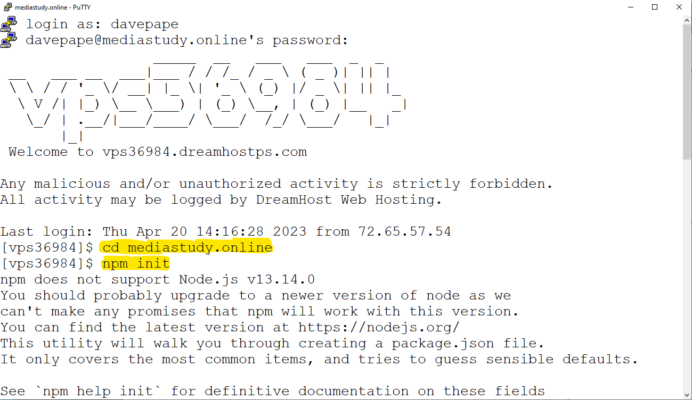
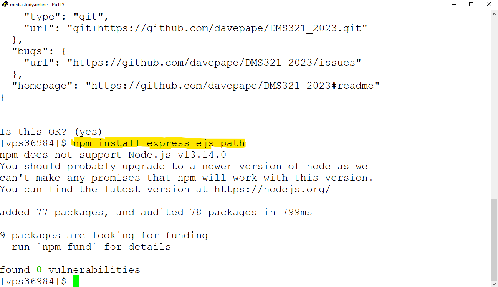
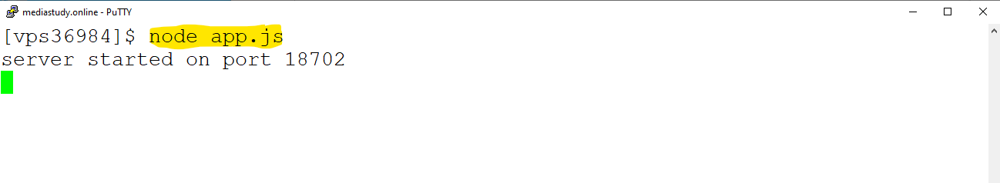
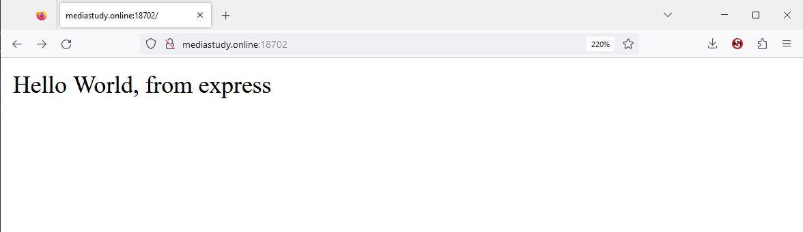
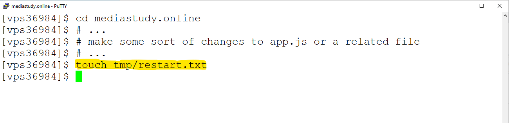

These notes will introduce the use of "Express" with Node.js to create a web application
The relevant websites, for official documentation, are:
The most important concepts to be covered are:
Additional topics covered are: npm, static files, passenger
The sample code that I'll be using is in my github repository: https://github.com/davepape/DMS321_2023
"npm" is the Node Package Manager. Node applications are usually built on various packages - bits of code that provide various useful tools, such as a web application framework or interface to a database. npm was installed along with node, and does the work of finding and downloading the newest version of the packages you want to use.
For example, to add "express" to your application, you would get it via:
npm install express
Most of the following can be done either on the shared server (your website for the class) via the ssh command-line, or on your own computer. On your own computer, you'll have to work from the command line - "cmd" for Windows, or "Terminal" for Mac OSX.
If on the shared server, first get into your website's directory, via "cd". For example, for my site "mediastudy.online", I type:
cd mediastudy.online
Initialize your project with "npm init" (you should only need to do this ONCE, not every time you work on a project). You can just hit return for all the questions it will ask you; they won't really matter much for class exercises.
Then, add any packages you will need. For this example, I'll run "npm install express ejs path".
Here are screenshots of me doing the above steps, on the shared server. Remember that "[vps36984]$" is the command-line prompt, the commands that I typed come after each prompt.
...
To try my examples, you can download all the files from my github. In particular, you'll need app.js, demo.js, the "views" directory, and possibly the "test.html" file from the "public" directory. All the files (except test.html) should go into the top level directory of your website (NOT under "public").
(The following commands are a quick & dirty way to download everything you need via git, on the shared server:)
git clone https://github.com/davepape/DMS321_2023.git
mv DMS321_2023/{app.js,demo.js,views} .
mv DMS321_2023/public/test.html public/test.html
mv DMS321_2023/public/stylesheets public/stylesheets
As I mentioned in class last week, everyone should have a unique port number to use when testing, so that your servers don't conflict with each other. I suggest using the last 4 digits of your UB Person Number, plus 10000 (so for me it's 18702). Use this port in the code (edit app.js and replace 18702 by your number) and when accessing your test site.
Once you've download the files and changed the port number, you can run the app via "node app.js".
Then, in your web browser, view it. If you're running on your local machine, use "http://localhost:18702" for the URL. If on the shared server, the URL is something like "http://mediastudy.online:18702", replacing "mediastudy.online" by your domain name and 18702 by your port number. Note that we must use "http", not "https" for this testing. When everything's all set to run on your website with Passenger (much further below), then we'll use "https".
 Remember that a URL has several parts. The significant ones in this case are the protocol ("http"), the host ("mediastudy.online" for mine), the port number (18702 for me; not needed later when running on the real website), and then everything after that.
The first parts connect the web browser to your node program. The "everything after that" part is the bit that Express uses to decide which specific code to run. This is accomplished via a "route".
In app.js, the first example route is the line that starts "app.get('/',...". '/' means a URL that has nothing after the host/port part - just the root of the website. So, when we went to the root URL above, Express ran the anonymous function that's defined in that route. A routing function can do whatever you want it to; the final thing that it typically does is call "res.send()", which sends a response back to the web browser. In this case, a fragment of HTML that says "Hello World, from express".
We could continue adding other routes via app.get(), but my example is a little more complex. The idea is that you're likely to make multiple, distinct web applications that will all run on your one website, so I'm using a structure that breaks them up into modules, each with their own path.
In the approach I'm using, "demo.js" will be a simple application, which is loaded in app.js via the line
app.use('/demo', require('./demo.js'));
The use() command is telling express that any requests which start with "/demo" are to be sent to routes defined in demo.js
Differences: Inside demo.js, we use the variable "router" instead of the variable "app", to define routes. We also use the special variable "module.exports" to 'export' this router for app.use() back in app.js.
There are two simple routes defined in demo.js. One ('/') keeps a count of how many times the /demo/ URL has been visited. The other ('/users') displays a made-up list of users (this code is borrowed from the ExpressJS community examples).
The counting route is sort of like the clicker project that you've done, except that now the counting is happening on the server, rather than in the client. So it's a single count of all times that anyone has visited the URL (clicked) since the node program was started; whereas your client-based project's 'count' variable was unique to the person playing it in one specific browser.
To test the two routes, I would use my web browser to view the URLs "http://mediastudy.online:18702/demo/" and "http://mediastudy.online:18702/demo/users". Again, replace the hostname and port with whatever ones you're using.
Besides routing, the other important thing that this demo does is to use templates. Templates make it easier to have your application serve up HTML web pages. Your code could just return HTML in a string via res.send(), like the "Hello World" part does, but a full, valid page is a bit big for that. So instead we created template files, which are HTML with added features.
In demo.js, in the basic '/' route, note the line that says "res.render('demo_index', { visits: count });". One thing that this does is to send the file views/demo_index.ejs back to the client web browser. The file is mostly a normal HTML file.
The added feature of EJS templates, the extra markup, allows us to insert data from our code. For example, we want to send the count of visitors, which is a variable in our code, back as part of the page. The part of demo_index.ejs that says "<%= visits %> indicates that a value named "visits" should be inserted into the HTML (by the server) before sending it back to the client web browser. Notice that "visits" is defined in the object that is passed as the second argument of res.render() - it gets the value of the variable count.
The "lucky number" part of demo_index.ejs, and the function and templates for the example list of users, show how EJS markup can also be used to basically include bits of Javascript code (if-statements, loops, etc) in templates, and also how to include templates into other templates, for more advanced applications. I leave that to you to read and figure out.
Regarding these two lines in app.js:
const path = require('path');
app.use(express.static(path.join(__dirname, 'public')));
This allows us to use static files. Sometimes we'd like to use some simple files as-is in our application, without needing to add more lines of code to serve them up. This is especially true for CSS files and images, but can also apply to HTML files which are not templates. The code above tells express that if a request comes in that matches a file in or under the "public" directory, to just send back that static file, without us having to define a route for it.
In my example, I put the file "test.html" in "public", and then in a browser I can go to "http://mediastudy.online:18702/test.html" to see it.
Our Dreamhost server uses the software "Phusion Passenger" to manage the many websites that are all running on a single virtual computer. Passenger knows about node.js, and is able to run it for us automatically, as long as our main code is in a file named "app.js" in the top-level directory of the website (which is how I've set up this demo).
When I run node on the command line above ("node app.js"), I'm not using Passenger. The reason to do this is so that I can see when my code crashes and see any error messages from it, which are bound to happen while developing a new application. Once I'm satisfied that everything works, I can let Passenger take over. So, if the code is on my server in the right spot, I can visit the URL "https://mediastudy.online/demo/users" and see the example list of users.
The most important thing to know about Passenger (for now) is that you need to tell it when you change your code. This is done by modifying a file named "tmp/restart.txt" (under your website's directory - "tmp" is a directory at the same level as "public"). It doesn't matter how you change the file; when Passenger notices that its last-modified date is different, it will automatically reload your app.js. You can do this by uploading a new file to restart.txt via Filezilla (if you're using that to upload new code), or with the "touch" command in the ssh command line. e.g.:
